Aplicativo grátis e de código aberto
giz Estúdio
Vídeos animados a partir de um roteiro
Escreva uma história ou uma aula, escolha quem fala e onde, e o giz anima tudo no ritmo das vozes: boca, gestos, cenas e legendas.
- Grátis
- Funciona sem internet
- Windows · macOS · Linux
Um vídeo feito no giz
Feito no giz: “24 horas sem internet”, uma história em 9:16 com legenda palavra a palavra.
Do roteiro ao vídeo
Seis etapas na barra do alto. Cada mudança é verificada e salva sozinha, e a animação segue o áudio: nada é cronometrado à mão.
-
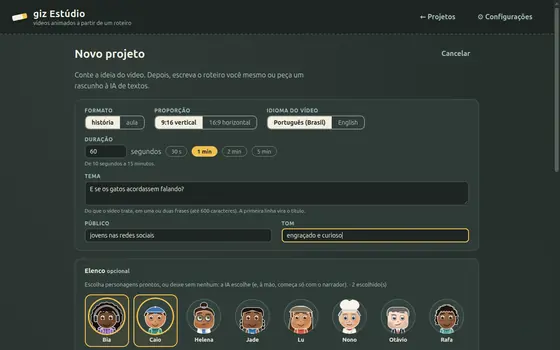
Ideia Formato, proporção, tema e tom. -
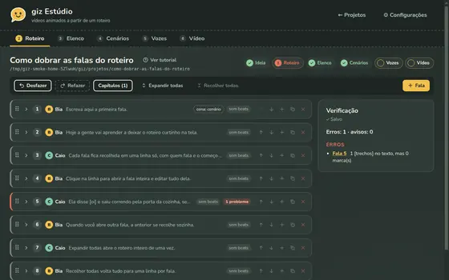
Roteiro Falas com pose, expressão e cena; à mão ou com IA. -
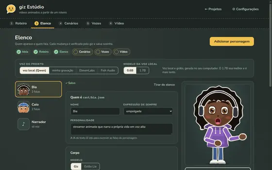
Elenco Quem fala, com que cara e que voz. -
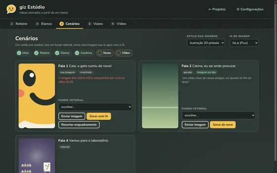
Cenários Um fundo para cada cena. -
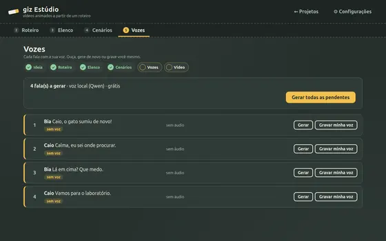
Vozes Cada fala vira áudio; só o que mudou é refeito. -
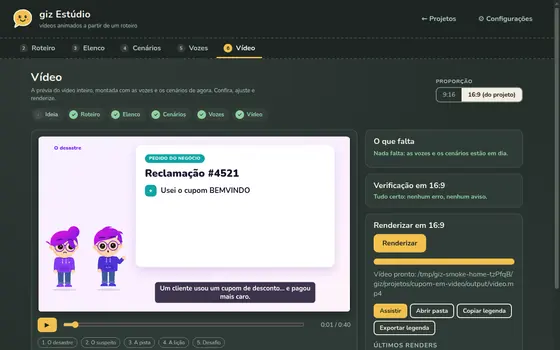
Vídeo Prévia, render em MP4 e legenda.
Um elenco para cada história
Monte personagens do zero (corpo, cores, roupa, expressão e voz) ou comece de um elenco pronto. Eles falam, gesticulam e reagem.
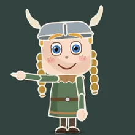
Passado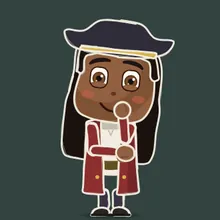
Passado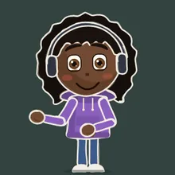
Presente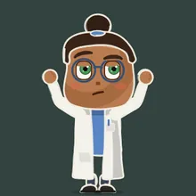
Presente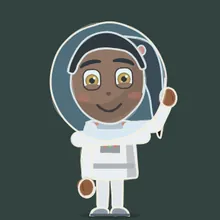
Futuro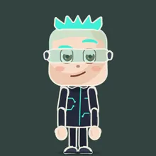
Futuro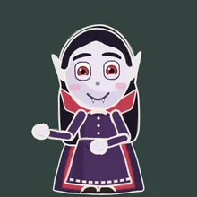
Criatura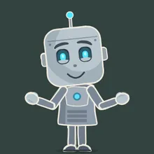
Criatura
Cenários do seu jeito
- 20 fundos vetoriais prontos, do Egito antigo à estação espacial.
- Uma foto sua, recortada no enquadramento da cena.
- Ou gerada por IA, com o custo antes de confirmar.
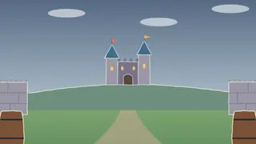
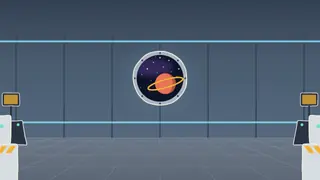
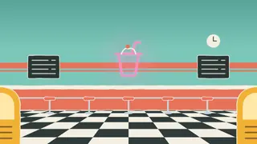
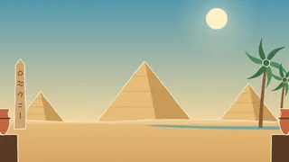
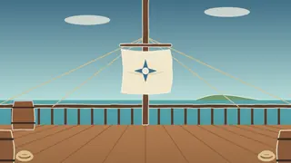
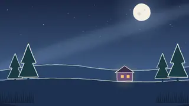
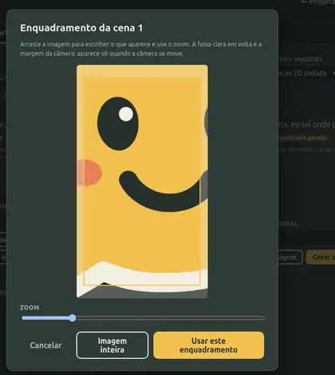
Vozes
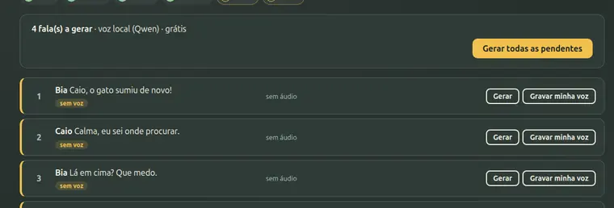
IA é opcional
Traga a sua chave (Claude, OpenAI, Gemini ou fal) para rascunhar roteiros e gerar cenários. Antes de cada gasto, o Estúdio mostra a estimativa e pede confirmação.
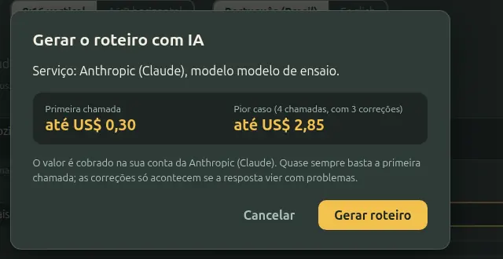
Tudo grátis e local é possível.
Vertical ou horizontal
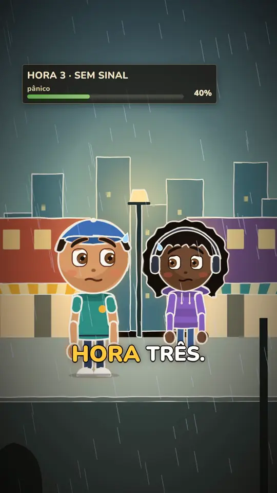
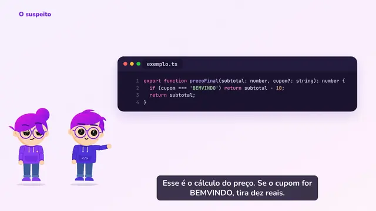
- Legendas SRT
- Português e inglês
- Um projeto, as duas proporções
Código aberto, licença MIT
Leia, mude e compartilhe. O mesmo motor também roda pela linha de comando, para quem prefere o terminal.
git clone https://github.com/AndersonGuilherme/giz.git
cd giz/motor
ONNXRUNTIME_NODE_INSTALL=skip npm install
npm run setupBaixar o giz Estúdio
Escolha o arquivo do seu sistema. Na primeira execução, um assistente baixa o modelo de voz (5,9 GB, uma vez só); depois tudo funciona sem internet.
-
.exe Seu sistema
Windows
Windows 10 ou 11, 64 bits
Baixar o instaladorNa tela “O Windows protegeu o computador”, clique em Mais informações → Executar assim mesmo.
-
.dmg Seu sistema
macOS
Apple Silicon (M1 ou mais novo)
Baixar o .dmgArraste para Aplicativos. No macOS 15 (Sequoia), se ele não abrir: Ajustes do Sistema → Privacidade e Segurança → Abrir Mesmo Assim.
-
.deb Seu sistema
Linux Ubuntu · Debian
64 bits (amd64)
Baixar o .debInstale com
sudo apt install ./giz-estudio-linux-amd64.deb. No Ubuntu 24.04 ou mais novo, use o .deb. -
AppImage
Linux outras distribuições
64 bits (x64), com FUSE
Baixar o AppImageDê
chmod +xe abra. Precisa delibfuse2. No Ubuntu 24.04 ou mais novo, use o .deb. -
.zip
Linux sem instalar
64 bits (x64), portátil
Baixar o .zipDescompacte numa pasta sua e abra o programa
giz-estudio.
Os instaladores ainda não são assinados, então o sistema avisa na primeira vez. É esperado.